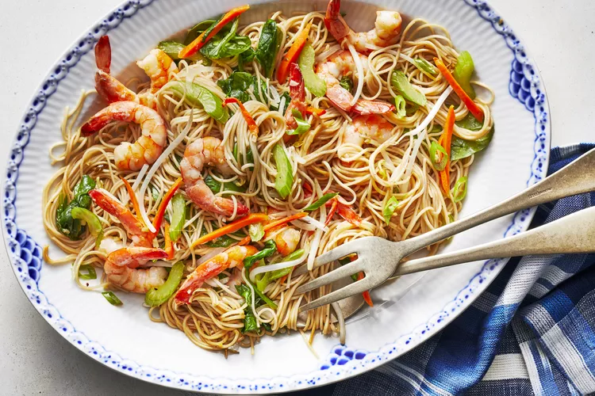

Shrimp Chow Mein

Description
This shrimp chow mein is delicious — it tastes just like takeout! The flavors are spot-on, the vegetables are slightly crunchy, and the sauce is light but enough to coat the noodles, veggies, and shrimp.
Ingredients
- 8 ounces chow mein noodles
- Quarter cup chicken stock
- 2 tablespoons dry sherry
- 2 tablespoons oyster sauce
- One and a half tablespoons soy sauce
- 2 teaspoons toasted sesame oil
- 1 teaspoon light brown sugar
- Quarter teaspoon ground black pepper
- 2 tablespoons canola oil
- Half cup matchstick carrots
- Half cup thinly sliced onion
- Half stalk celery, diagonally sliced
- One and a half tablespoons finely chopped fresh ginger
- 1 teaspoon finely chopped garlic
- Three quarters of a pound of uncooked medium shrimp, peeled and deveined
- 1 cup bean sprouts
- 4 stalks green onions, thinly sliced on the diagonal
- 2 cups fresh baby spinach
Steps
- Fill a large pot with lightly salted water and bring to a rapid boil. Cook noodles at a boil until tender yet firm to the bite, 3 to 5 minutes. Drain, rinse, and set aside.
- Meanwhile, whisk together chicken stock, sherry, oyster sauce, soy sauce, sesame oil, brown sugar, and pepper in a small bowl.
- Heat a large 12-inch cast iron skillet or wok over medium-high heat until hot. Add canola oil and swirl to coat the bottom of the pan; heat until it just begins to smoke. Add carrots, onion, celery, ginger, and garlic to hot oil and cook, stirring constantly, just until vegetables begin to soften, about 1 minute. Add shrimp and cook, stirring constantly, until almost done, about 2 minutes. Push vegetables and shrimp to one side of the pan and add chicken stock mixture; stir constantly until sauce is hot.
- Add noodles and stir well to mix with sauce and vegetables (using a metal spatula and chopping noodles slightly helps to mix this together.) Cook, stirring constantly, until the noodles have absorbed the sauce, about 2 minutes. Stir in bean sprouts and green onions and cook, stirring constantly, until just cooked, 1 to 2 minutes. Remove from heat and stir in baby spinach until just wilted. Serve immediately.
Home